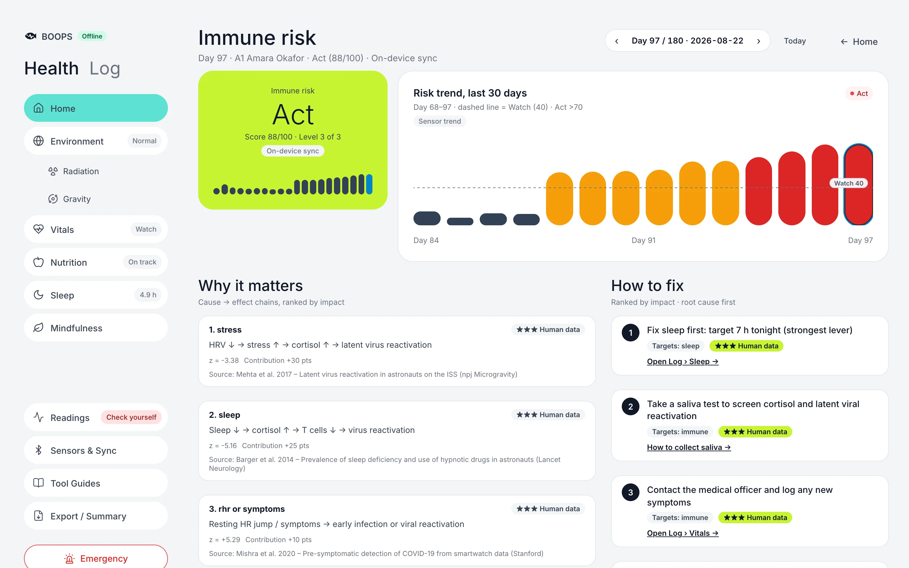
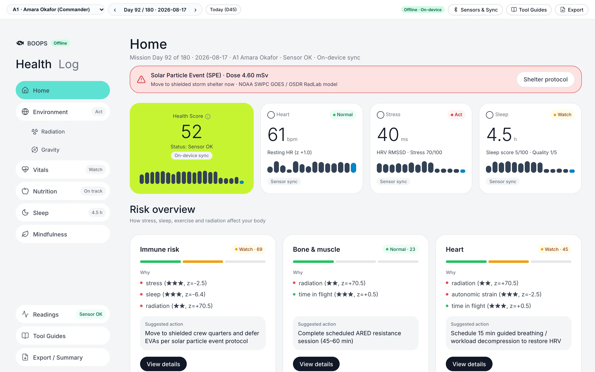
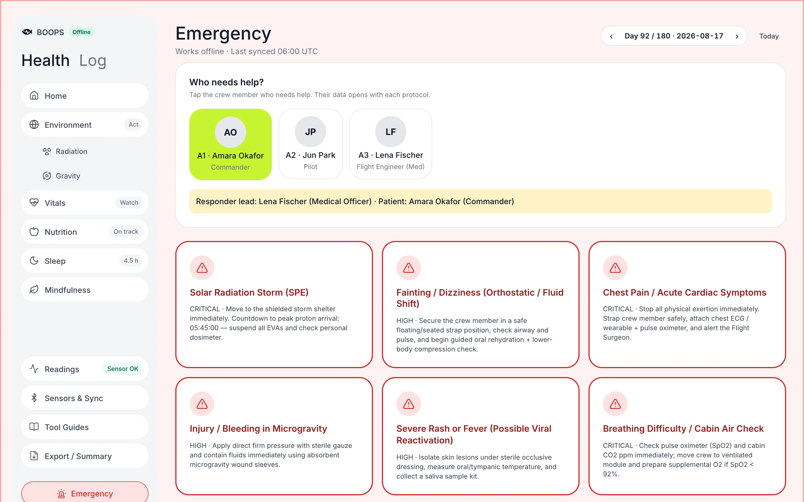
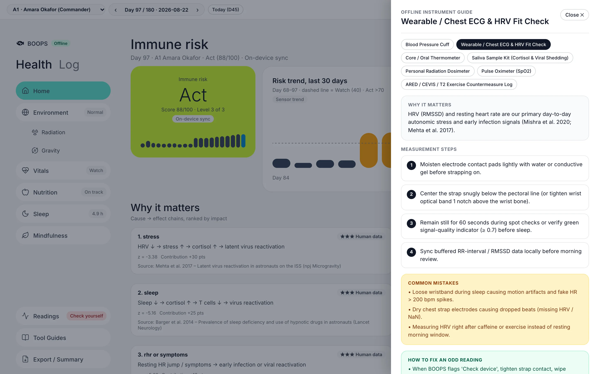
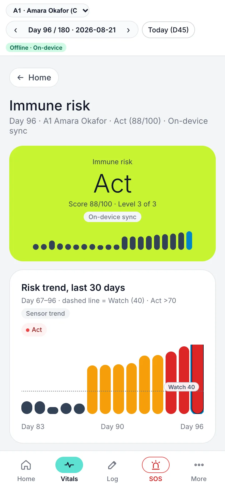

Poor sleep, then an infection before symptoms
Sleep falls to 5 hours a night. On days 95–96 resting heart rate rises 2 SD above A1's normal, and BOOPS warns 1–2 days before the sore throat starts. First fix: sleep.
Immune 88 · ActBOOPS compares each astronaut's wearable, sleep and radiation data with their own first two weeks in flight, and warns about immune, bone and muscle, and heart risk before symptoms show.

Real screens from BOOPS, running on the simulated 180-day mission.




The same app runs on Android, iOS, the desktop and as a web page. Nothing needs a network.
Simple rules you can check by hand. Everything runs on the device.
Flight days 1–14 set each person's baseline, so the early fluid shift doesn't set off alarms.
A one-day spike usually means a sensor slipped. It is flagged, never deleted, and never ignored if it could be dangerous.
Stress, sleep, spacewalks, radiation and resting heart rate add up with fixed weights. Under 40 is Normal, 40–70 Watch, over 70 Act.
Each warning shows the chain of cause, how strong the evidence is, what to fix first, and when to ask for help.
Most health alerts watch one number. BOOPS links them. This is crew member A1 on day 97: poor sleep, stress, a jump in resting heart rate and a radiation dose all feed the immune score. Line width is the weight in the score.
Drag to turn it. Simulated data.
Built into the 180-day mission with a fixed seed, so anyone can rerun them and get the same result.
Sleep falls to 5 hours a night. On days 95–96 resting heart rate rises 2 SD above A1's normal, and BOOPS warns 1–2 days before the sore throat starts. First fix: sleep.
Immune 88 · ActSixteen days with almost no resistance exercise while stress stays high. Bone and muscle risk climbs even though heart rate and blood pressure look fine.
Bone & muscle 61 · WatchA radiation spike on days 92–93 opens the shelter checklist. On days 30, 50 and 110 the sensors report impossible values, and BOOPS says "check device" instead of raising an alarm.
Radiation 4.2 mSv · ActFluid moves toward the head, heart rate rises and blood pressure drops. BOOPS holds back alerts and uses these days to learn each person's normal.
Adaptation phaseSources: Mishra 2020 · Mehta 2017 · Barger 2014 · Crucian 2018 · Ferrando 2004 · Wadhwa 2024. Radiation shaped after NASA OSDR RadLab and NOAA SWPC GOES. Open the evidence map
From 540 simulated crew-days and four extra experiments.
Resting heart rate flagged the infection on days 95–96, up to 2 days before symptoms (method from Mishra et al., 2020).
Stress plus skipped resistance exercise pushed bone and muscle risk to 61 (Watch) before any real loss set in.
Sensor spikes and loose contacts were marked "check device", and the safety rule still applied.
A stress model trained on WESAD scored 91% in lab tests but didn't fit daily data, so the rules stay in charge.
41 concepts, 83 links and 107 sources, each link graded by how strong the evidence is. Real day-by-day astronaut data isn't public, so all mission data is labeled Simulated.
The app, the code, and the sample report and data.
The same crew app in your browser. Try the Simulated demo mission or start with your own data. Add it to your home screen and it keeps working with no internet. Anything you log stays in your browser.
Crew dashboard, 7 tool guides, emergency checklists and the camera pulse check. APK, about 24 MB.
Python risk engine, database schema, desktop UI, Android project, validation scripts and tests.
A 2-page PDF for crew member A1: risk over time and what to do first. Simulated.
All 540 rows: crew A1, A2 and A3 over 180 days, 20 columns. CSV. Simulated.
Every link between body systems, with its evidence grade and source. Opens offline in the browser.
git clone https://github.com/owlwee-sudo/boops_Space.git cd boops_Space pip install -r requirements.txt python engine/run_all.py # simulate 540 crew-days, score risk, export PDF + CSV python engine/server.py # local app on http://127.0.0.1:8000 pytest tests/ -q # run the tests
No. BOOPS is a prototype built for NASA Space Apps Challenge 2026 (Prototype · Not a medical device). It gives risk indicators and early warnings based on how far a reading is from your own normal. It supports a qualified healthcare professional and does not replace one.
Day-by-day astronaut health data isn't public, so a deep model would have nothing real to learn from and would invent patterns. Weighted rules can be checked line by line. Machine learning is optional and only gives a second opinion: a stress classifier trained on the public WESAD dataset and an anomaly detector.
The 180-day dataset (540 records for crew A1–A3) is Simulated by engine/generate_mission.py with a fixed seed,
so it is the same every time. Radiation events are shaped after public NASA OSDR RadLab and NOAA SWPC GOES data.
Every simulated row is labeled Simulated.
Face tracking (MediaPipe) and the pulse method (POS, Wang 2017) run on the device. No video is stored or sent. The optional face check compares you only with your own first 14 checks, answers low, medium or high, adds nothing to the score by default (15% at most), and never names an emotion.
On Android, install boops-android.apk.
On macOS, Linux or Windows, get the source from
GitHub
and run python engine/run_all.py, then python engine/server.py.
Install the Android app, open it in your browser, or read the code.